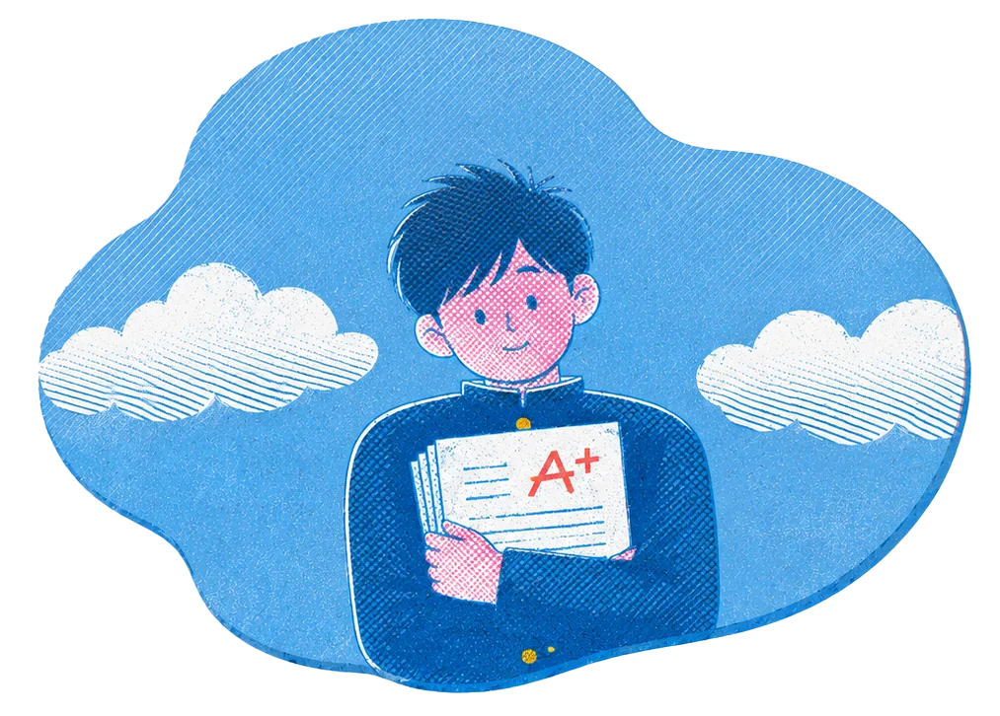
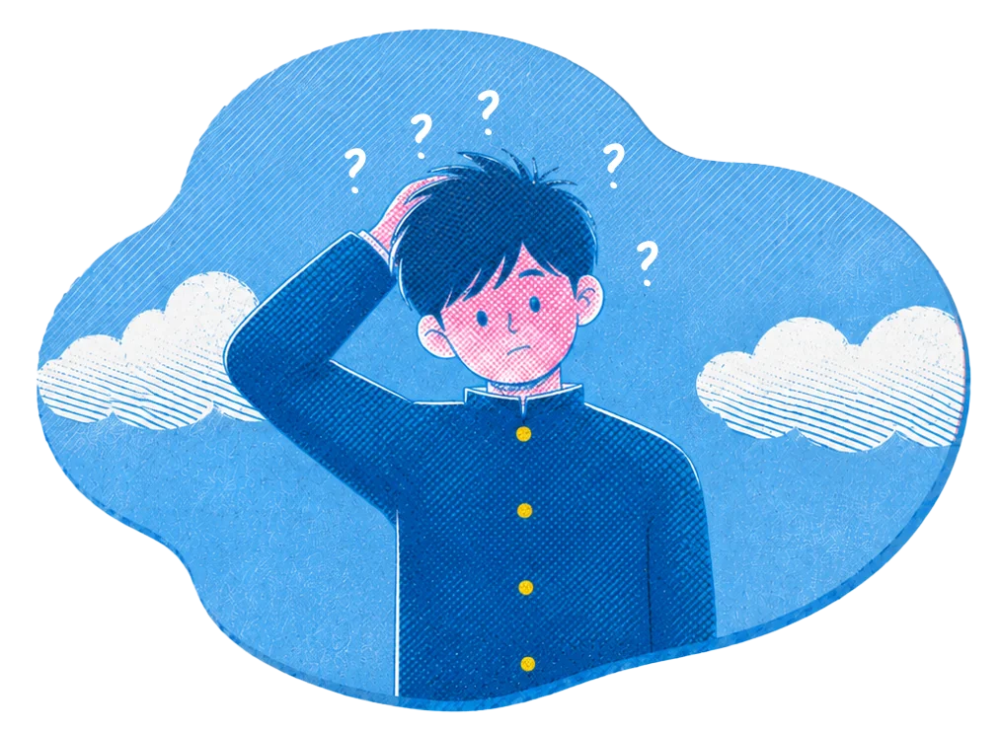
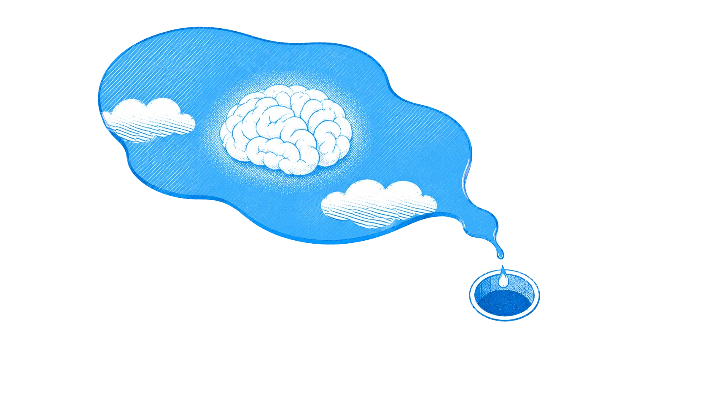
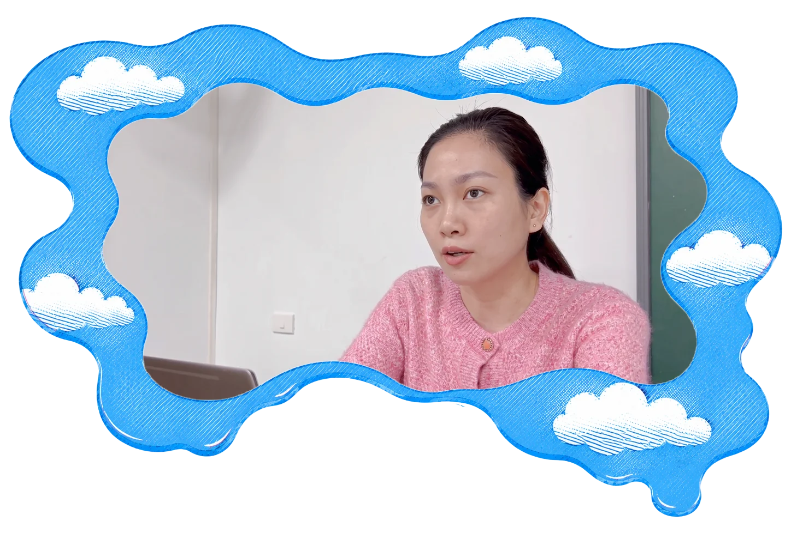
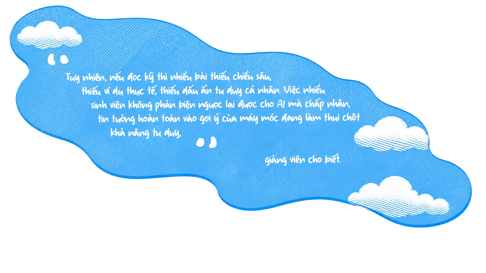
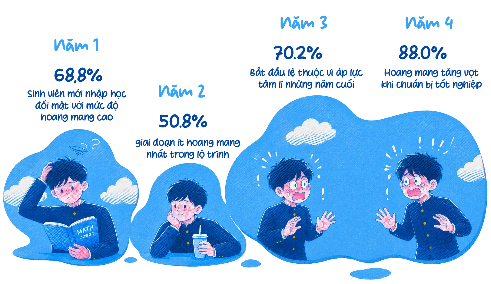
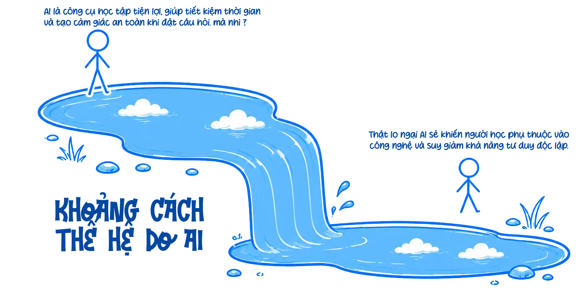
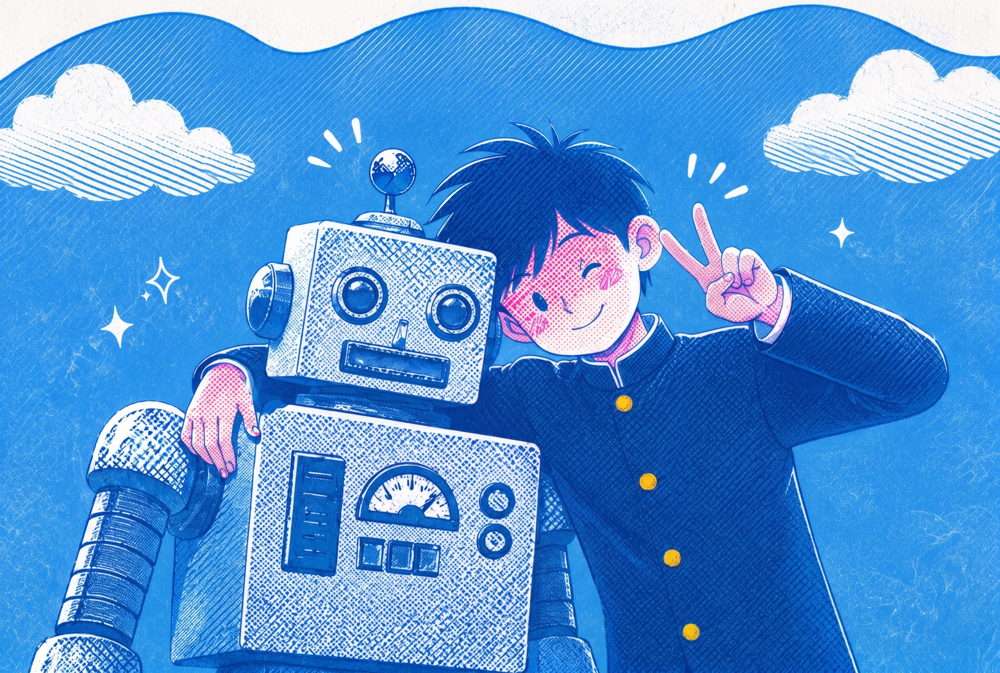

Đã copy
Nghiên cứu khảo sát đối với 238 sinh viên tại Hà Nội và góc nhìn cảnh báo từ các chuyên gia giáo dục trước làn sóng "ủy thác tư duy" cho Trí tuệ nhân tạo.
Nguyễn Minh Đức - sinh viên năm ba ngành Truyền thông tại Hà Nội từng nghĩ mình đã hoàn toàn làm chủ được công nghệ. Đối mặt với bài luận 2.000 từ về đề tài "Xu hướng truyền thông số", A chỉ mất đúng 3 câu lệnh trên ChatGPT để nhận về một văn bản chỉn chu. Kết quả trả về khiến Đức mỉm cười tự mãn: Điểm A+ từ giảng viên, tỷ lệ trùng lặp dưới 10% khi quét qua phần mềm kiểm tra đạo văn.


Tuy nhiên, trong buổi thi vấn đáp cuối kỳ, A gặp khó khăn khi phải tự giải thích và bảo vệ các lập luận trong bài làm. Trước câu hỏi phản biện của giảng viên về cơ sở của một luận điểm trong bài, nam sinh không thể đưa ra câu trả lời rõ ràng.
Trường hợp của A phản ánh một thực tế đang xuất hiện ở nhiều sinh viên hiện nay: AI không chỉ được dùng để hỗ trợ tìm kiếm thông tin hay chỉnh sửa câu chữ, mà còn tham gia trực tiếp vào quá trình hoàn thành bài tập học thuật. Nó đang âm thầm biến thành một "bộ não thứ hai", dần thay thế và bào mòn năng lực tư duy độc lập của người trẻ.
Khảo sát trên 238 sinh viên tại Hà Nội cho thấy mức độ thâm nhập sâu của Trí tuệ nhân tạo (AI) vào quy trình học tập. Thay vì dừng ở mức công cụ hỗ trợ, AI đang dần đảm nhận các công đoạn tư duy cốt lõi, kéo theo hệ lụy về sự suy giảm năng lực tự giải quyết vấn đề của người học.
Tần suất sử dụng AI
58.8%
Hàng ngày
Hàng ngày: 58.8%
Vài lần/Tuần: 27.7%
Ít hơn (Vài lần/Tháng): 13.1%
Chưa từng sử dụng: 0.4%
Hơn một nửa số sinh viên được khảo sát (58,8%) có thói quen sử dụng AI hàng ngày để phục vụ việc làm bài tập.
Dữ liệu cho thấy công nghệ AI gần như đã hoàn toàn phủ sóng đời sống học tập của sinh viên khi chỉ còn 0,4% người được hỏi cho biết chưa từng sử dụng AI. Làn sóng này đã chạm ngưỡng đỉnh điểm khi nhóm sử dụng AI hằng ngày chiếm tới 58,8%, cao gấp hơn hai lần so với nhóm chỉ dùng vài lần mỗi tuần (27,7%).
Xu hướng này không chỉ diễn ra ở phạm vi cục bộ mà trên quy mô toàn cầu, theo báo cáo Global AI Student Survey 2024 cho thấy 86% sinh viên trên thế giới đã đưa AI vào quy trình học tập. Trong đó ChatGPT hiện là nền tảng áp đảo với 81% người dùng và có tới 55% sẵn sàng trả phí để tiếp tục sử dụng các công cụ AI phục vụ học tập và công việc.
Tỉ lệ người dùng ChatGPT
Tỉ lệ sẵn sàng bỏ tiền nâng cấp gói
Màu đỏ càng đậm (màu vàng là thấp nhất) -> mức độ sử dụng càng nhiều.
*Hình ảnh mang tính chất minh họa
*Hình ảnh mang tính chất minh họa
Những con số này giúp ta thấy rõ AI không còn được sử dụng ở mức thử nghiệm hay hỗ trợ trong những tình huống đặc biệt, mà đã trở thành một phần quen thuộc trong hoạt động học tập hằng ngày của sinh viên. Từ tìm kiếm tài liệu, tóm tắt kiến thức đến làm bài tập, AI đang dần trở thành trợ lý học tập quen thuộc của một bộ phận lớn sinh viên Hà Nội.
Số liệu cho thấy AI không còn chỉ được sử dụng cho các thao tác hỗ trợ đơn lẻ, mà đã xuất hiện xuyên suốt quá trình học tập của sinh viên. Từ giai đoạn hình thành ý tưởng (76,5%), xây dựng cấu trúc bài viết (62,2%), đọc hiểu tài liệu (56,3%) cho đến ôn tập kiến thức (51,3%), phần lớn các công đoạn vốn đòi hỏi tư duy chủ động đều đang được chuyển giao một phần cho công cụ AI.
Mức độ ứng dụng AI trong các công đoạn học tập
Sinh viên sử dụng công nghệ nhiều nhất ở các khâu hình thành ý tưởng và lập dàn ý.
Đặc biệt, tỷ lệ sử dụng AI cao nhất lại tập trung ở bước khởi đầu - giai đoạn quan trọng nhất của tư duy học thuật, nơi người học cần tự xác định vấn đề, tìm hướng tiếp cận và hình thành quan điểm cá nhân. Điều này cho thấy nhiều sinh viên không chỉ dùng AI để tiết kiệm thời gian ở các thao tác kỹ thuật, mà đang phụ thuộc vào công cụ này ngay từ bước định hướng tư duy ban đầu.

Trong khi đó, hơn một nửa sinh viên dùng AI để tóm tắt tài liệu và thiết lập hệ thống ôn tập phản ánh xu hướng “rút gọn” quá trình tiếp nhận kiến thức. Xu hướng hành vi này hoàn toàn tương thích với các nghiên cứu toàn cầu và báo cáo thị trường hiện nay. Cụ thể, nghiên cứu của Xie, Lin và Yu (2024) đã chỉ ra rằng AI giúp sinh viên tiết kiệm thời gian đáng kể trong việc xử lý, đọc và tóm tắt các đoạn văn bản dài. Đồng thời, báo cáo của Decision Lab cũng xác nhận rằng "học kiến thức mới theo cách đơn giản hơn" chính là động lực lớn nhất khiến người dùng tìm đến các công cụ AI. Điều này có thể giúp giảm áp lực học tập trước mắt, nhưng cũng đặt ra lo ngại về khả năng ghi nhớ, tư duy phản biện và năng lực tự học trong dài hạn.
Đánh giá về thực trạng này, Cô Trần Ngọc Trang Ninh - Giảng viên Khoa Truyền thông nhận định việc sử dụng AI từ đầu đến cuối giúp bài viết của sinh viên gọn gàng, bố cục hợp lý và ngôn ngữ trơn tru hơn về mặt hình thức.

ThS. Trần Ngọc Trang Ninh
Giảng viên Khoa Truyền thông

Xu hướng truyền thông số tại Việt Nam
Bắt đầu từ một trang trắng...
Mình hỏi nhanh một chút thôi...
👆 Click để xem suy nghĩ của sinh viên

Khảo sát chỉ ra có đến 58,9% sinh viên cho biết năng lực giải quyết vấn đề độc lập của bản thân bị suy giảm và 50% cảm thấy hoang mang hoặc thiếu tự tin nếu phải làm bài mà không có AI. Những con số này cho thấy sự phụ thuộc vào AI không còn chỉ nằm ở hành vi học tập, mà đã bắt đầu ảnh hưởng đến tâm lý và cảm giác tự ti của người học trong quá trình xử lý vấn đề.

Mức độ hoang mang của sinh viên khi thiếu AI / Biểu đồ tâm lý: Càng học lâu, sinh viên càng có xu hướng phụ thuộc vào AI trong quá trình học và xử lý bài tập
Sự chênh lệch này cho thấy mức độ phụ thuộc vào AI không chỉ liên quan đến tần suất sử dụng, mà còn gắn với từng giai đoạn học tập và những áp lực khác nhau của sinh viên.
Với nhóm sinh viên năm nhất, AI thường được tiếp cận với tâm lý tò mò và mong muốn khám phá công nghệ mới. Nghiên cứu của Xie, Lin và Yu (2024) cho thấy người học ở các bậc học thấp có xu hướng cởi mở hơn với các công cụ tri thức mới. Tuy nhiên, khi chưa có nền tảng kiến thức chuyên môn đủ vững, sinh viên cũng dễ tiếp nhận thông tin do AI cung cấp mà không đủ khả năng kiểm chứng hoặc phản biện. Cecilia Ka Yuk Chan (2023) cho rằng đây là nhóm có nguy cơ bị ảnh hưởng bởi AI cao vì thường khó phân biệt giữa một câu trả lời được trình bày mạch lạc và một câu trả lời thực sự chính xác. Điều này có thể khiến AI nhanh chóng trở thành nguồn cung cấp đáp án thay vì chỉ là công cụ hỗ trợ học tập.
Trong khi đó, với sinh viên năm tư, nguyên nhân sử dụng AI lại mang tính thực tế hơn. Đây là giai đoạn khối lượng kiến thức chuyên ngành tăng mạnh, đi kèm áp lực nghiên cứu, thực tập và các yêu cầu học thuật phức tạp hơn. AI vì thế được sử dụng như công cụ tiết kiệm thời gian để xử lý tài liệu dài, hỗ trợ dịch thuật hoặc xây dựng nội dung học thuật. Tuy nhiên, chính nhóm này cũng ghi nhận mức độ lo lắng cao hơn khi thiếu AI hỗ trợ. Điều này cho thấy sự phụ thuộc không chỉ dừng ở hành vi sử dụng công nghệ, mà đã bắt đầu ảnh hưởng đến cảm giác tự tin và khả năng tự giải quyết vấn đề của người học.
Dù khác nhau về động cơ sử dụng, điểm chung đáng chú ý là nhiều sinh viên đang hình thành thói quen tìm đến AI trước khi tự suy nghĩ hoặc tự tìm cách xử lý vấn đề. Khi kỹ năng kiểm soát chất lượng đầu ra của chatbot còn hạn chế, AI rất dễ chuyển từ vai trò công cụ hỗ trợ sang tác nhân định hướng cách tiếp cận tri thức của người học.
Kết quả khảo sát cho thấy thói quen sử dụng công nghệ đang dần làm thay đổi văn hóa giao tiếp và mối quan hệ truyền thống trong môi trường đại học. Nếu trước đây giảng viên là người hỗ trợ trực tiếp cho sinh viên khi gặp khó khăn trong học tập, thì nay AI dần được nhiều sinh viên ưu tiên tìm đến đầu tiên khi gặp các vấn đề trong học tập.
Sự thay đổi này phản ánh xu hướng sinh viên ưu tiên các công cụ có khả năng phản hồi nhanh, hoạt động liên tục và không tạo áp lực trong quá trình trao đổi. Không giống môi trường lớp học trực tiếp, AI cho phép người học đặt câu hỏi nhiều lần mà không lo bị đánh giá hay e ngại về kiến thức của bản thân. Đây cũng chính là điểm cốt lõi tạo nên “The AI Generation Gap” được chỉ ra trong các nghiên cứu giáo dục gần đây. Trong khi sinh viên Gen Z thường xem AI là công cụ học tập tiện lợi, giúp tiết kiệm thời gian và tạo cảm giác an toàn khi đặt câu hỏi. Trong khi đó, nhiều giảng viên lại lo ngại AI sẽ khiến người học phụ thuộc vào công nghệ và suy giảm khả năng tư duy độc lập. Điều đó khiến quá trình tìm kiếm hỗ trợ học tập dịch chuyển từ đối thoại với giảng viên sang tương tác với công nghệ.
Tuy nhiên, khi AI ngày càng trở thành công cụ được tìm đến đầu tiên để giải quyết thắc mắc học tập, mức độ tương tác trực tiếp giữa sinh viên và giảng viên cũng có xu hướng giảm dần. Trong môi trường đại học, quá trình trao đổi với giảng viên thường đi kèm phản biện, gợi mở và yêu cầu người học tự lý giải vấn đề. Ngược lại, AI có xu hướng cung cấp đáp án nhanh và trực tiếp. Điều này khiến sinh viên dễ hình thành thói quen tiếp nhận sẵn thông tin thay vì chủ động đào sâu và tranh luận như trước.

Khi AI đã trở thành công cụ học tập phổ biến ở cả Việt Nam lẫn thế giới, nhiều chuyên gia giáo dục cho rằng câu hỏi hiện nay không còn là “có nên dùng AI hay không”, mà là “sử dụng AI như thế nào để không đánh mất năng lực tư duy của người học”. AI đang giúp người học xử lý thông tin nhanh hơn, giảm áp lực trước khối lượng bài tập lớn và trở thành một kỹ năng khó có thể tách rời trong thời đại số. Tuy nhiên, khi công nghệ tham gia quá sâu vào quá trình học tập, nhiều công đoạn vốn đòi hỏi tư duy cá nhân như phân tích, lập luận hay giải quyết vấn đề cũng dần được chuyển giao cho máy móc.
Đáng quan ngại hơn là sự lệ thuộc này diễn ra một cách âm thầm. Sinh viên vẫn cảm thấy mình “đang học”, nhưng trên thực tế, AI đã tham gia vào nhiều khâu quan trọng của quá trình tư duy. Đây cũng là lý do vì sao mức độ lo ngại của giảng viên trước tình trạng phụ thuộc AI của sinh viên đạt 4,12/5 điểm (theo dữ liệu đối chiếu từ nghiên cứu của Cecilia Ka Yuk Chan.)
Từ thực tế đó, nhiều ý kiến cho rằng các trường đại học cần thay đổi phương pháp kiểm tra và đánh giá thay vì chỉ tập trung vào việc phát hiện gian lận bằng công nghệ. Các dạng bài tập lý thuyết, tiểu luận được giao về nhà cần giảm tỷ trọng điểm số, bởi đây là hình thức mà chatbot AI có khả năng xử lý nhanh và khó kiểm soát mức độ can thiệp. Thay vào đó, giáo dục đại học cần hướng đến các phương thức đánh giá trực tiếp như thuyết trình, phản biện, xử lý tình huống tại lớp hoặc thi viết không sử dụng thiết bị điện tử.
Trao đổi về vấn đề này, cô Trang Ninh cho rằng điều quan trọng không nằm ở việc sinh viên có sử dụng AI hay không, mà ở khả năng tự hiểu và trình bày lại vấn đề:
Vì vậy, thách thức lớn nhất hiện nay không nằm ở việc ngăn cấm AI, mà là cách giúp sinh viên sử dụng công nghệ này như một công cụ hỗ trợ mở rộng tư duy, thay vì phụ thuộc hoàn toàn vào các nội dung do AI tạo ra.
